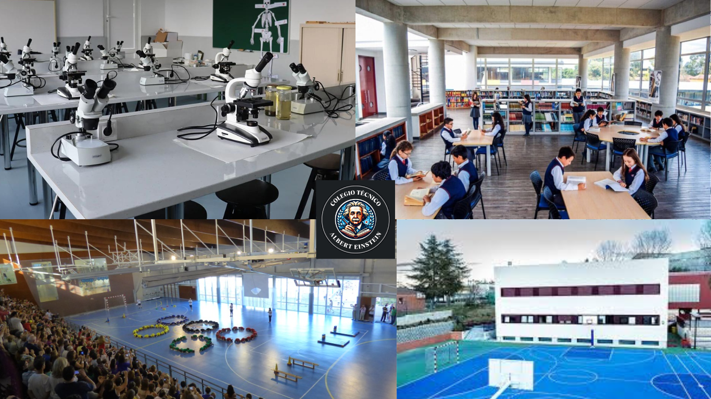

¡Bienvenido al Colegio Técnico Albert Einsten!
En nuestro colegio Ofrecemos una experiencia verdaderamente unica. Nuestro enfoque innovador combina la tradición con la vanguardia, creando un entorno estimulante que nutre la creatividad, En nuestro colegio, los estudiantes disfrutarán de un plan de estudios emocionante que va más allá de las aulas tradicionales. Siendo asi los estudiantes encontrarán un entorno estimulante que fomentará la curiosidad, la creatividad y el pensamiento crítico.
Nuestro equipo altamente calificado se compromete a guiar a los estudiantes en su viaje educativo, brindándoles las herramientas necesarias para alcanzar su máximo potencial. Desde el aprendizaje experiencial hasta proyectos interdisciplinarios, cada día es una oportunidad, Además, nuestra comunidad educativa está comprometida con la inclusión, la diversidad y el desarrollo integral de cada estudiante. Con instalaciones modernas y recursos tecnológicos de última generación, nuestros alumnos estarán preparados para enfrentar los desafíos. Tambien ofrecemos una amplia gama de actividades extracurriculares, desde deportes hasta arte y música, para enriquecer la experiencia educativa.

Con instalaciones modernas y recursos tecnológicos de vanguardia, nuestros alumnos estarán preparados para enfrentar los desafíos del mundo actual. Si estás buscando una educación que despierte la pasión por el aprendizaje y fomente la innovación, ¡has encontrado el lugar adecuado! ¡Inscríbete ahora! y forma parte de una comunidad educativa que valora el crecimiento integral de cada estudiante! Juntos, construiremos un futuro brillante.
